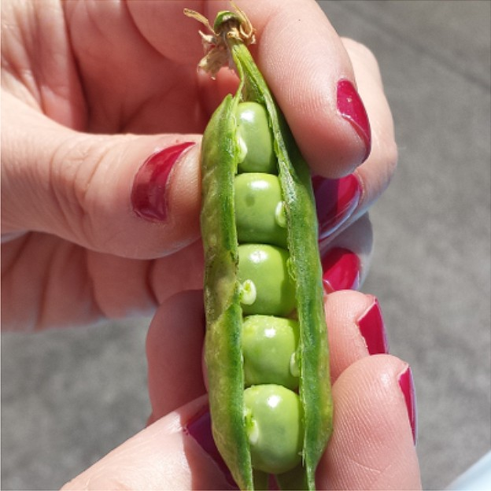

Zucchine

Coltivare in terreno molto ricco di materia organica e non coltivare dopo le Solanacee o piante della stessa famiglia delle cucurbitacee.
- Varietà:
- Periodo di semina:
- Primo raccolto:
- Ultimo raccolto:
- Raccolto
Dimensione Quantità piccole(10cm) 16 Medie (11-16cm) 26 Grandi(>16cm) 9 51
Piselli
American Wonder: Varietà media precoce come ciclo colturale.
Consigli-
Piantare in semenzaio riscaldato.
É importante:- Acquistare vasetti biodegradabili (di cocco o cartone)
- Mantenere areato il semenzaio per evitare muffe
- Non usare il coperchio del semenzaio
- Non mettere il semenzaio vicino al termosifone
- Fissare i sostegni nel terreno non appena le piantine raggiungono i 10 cm
- Acquistare una rete con spazi non più di 10cm per garantire sostegni adeguati -->Acquista Semi<--